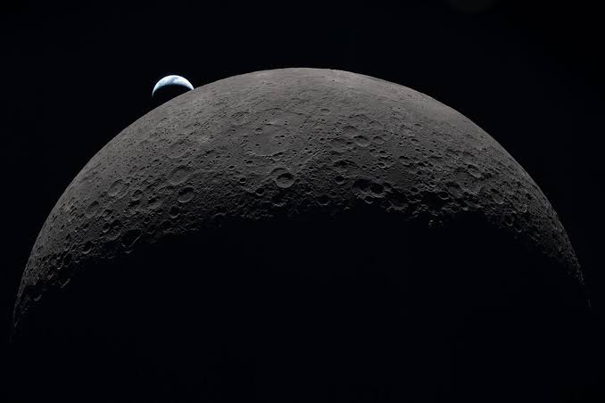

La Luna
La Luna es el único satélite natural de la Tierra (~3,474 km de diámetro) y el quinto más grande del Sistema Solar. Su atracción gravitatoria genera las mareas oceánicas, estabiliza la inclinación axial terrestre —favoreciendo un clima más regular a largo plazo— y presenta rotación síncrona, por lo que siempre muestra la misma cara hacia nosotros. Su superficie está marcada por cráteres de impacto y llanuras basálticas oscuras (mares lunares), con una exosfera sumamente tenue y variaciones térmicas extremas entre el día y la noche.
Más información sobre La Luna